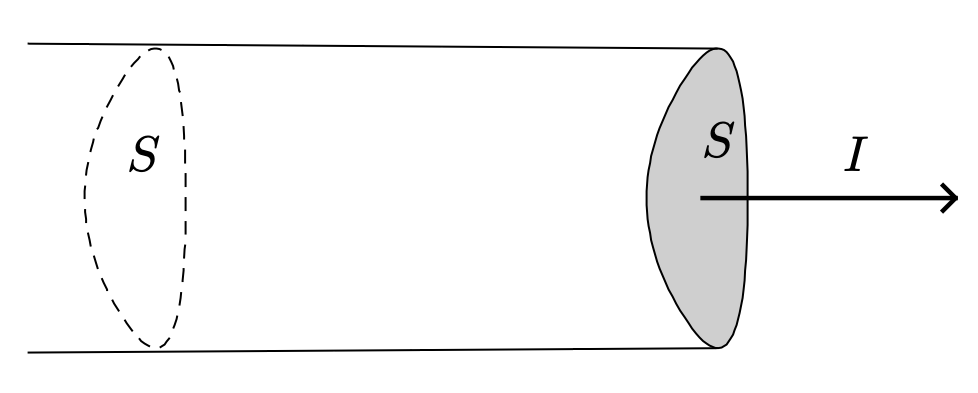
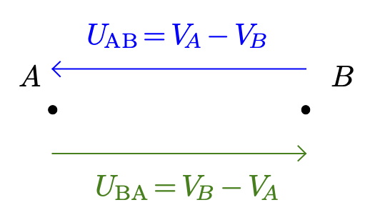
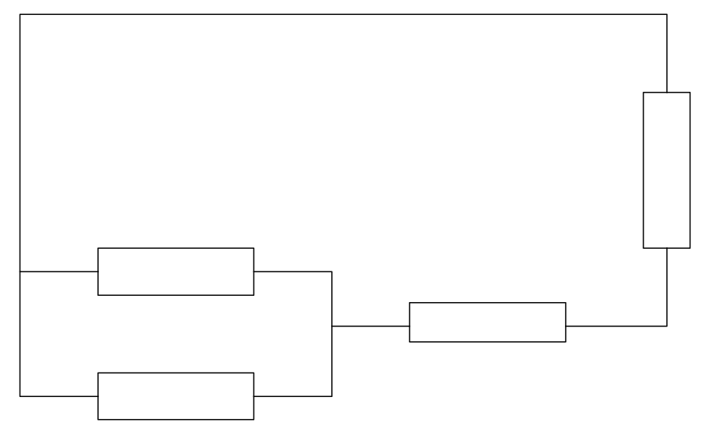
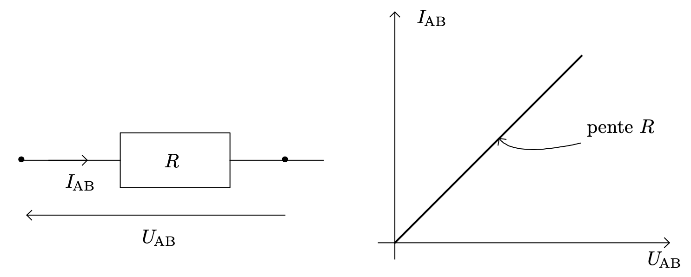
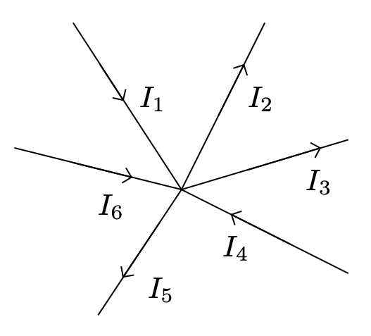
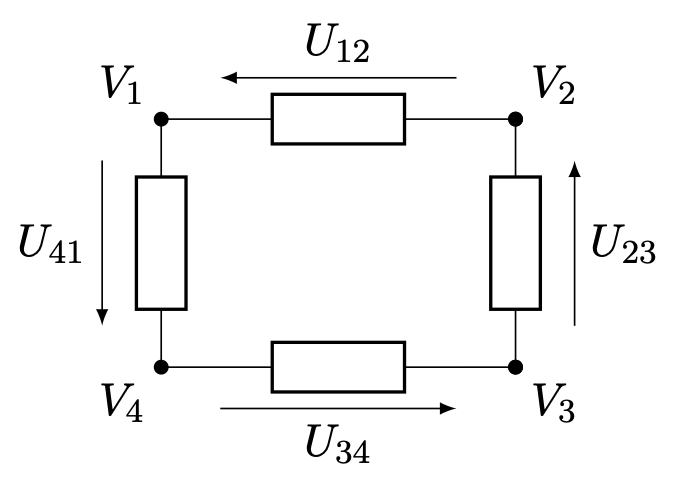
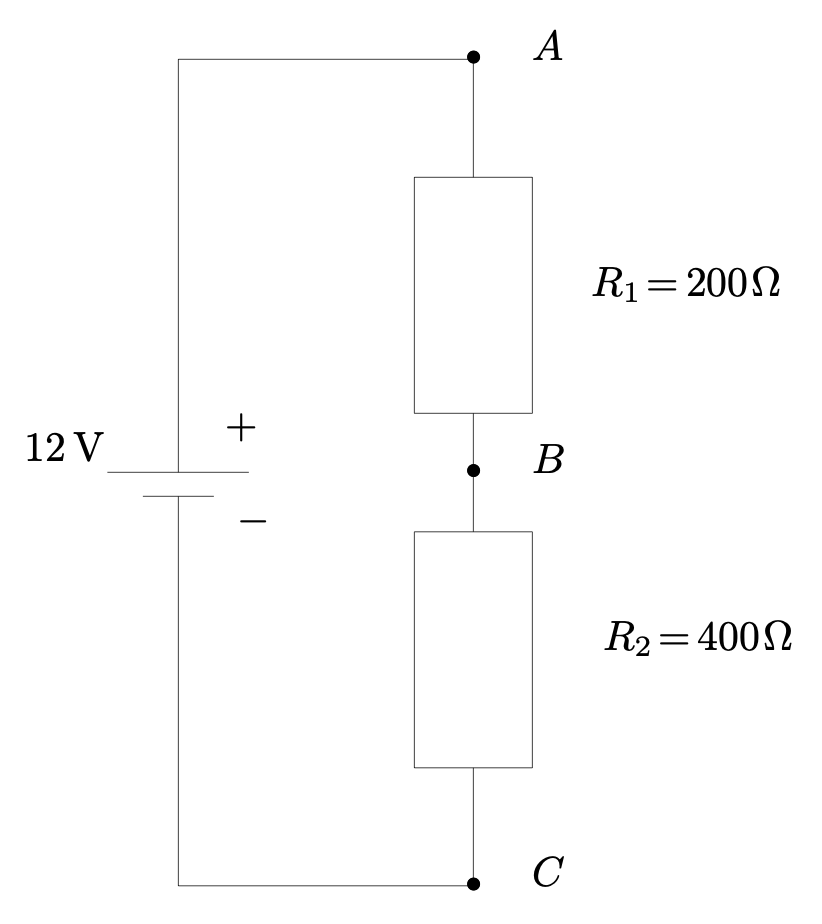
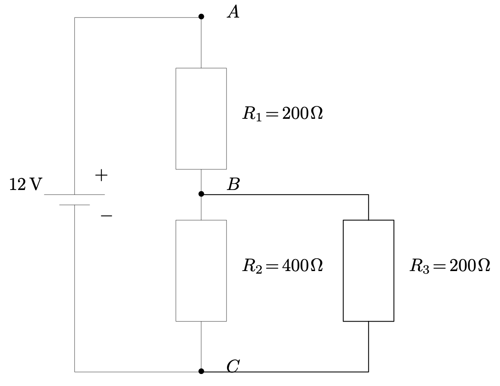

L’électrocinétique est l’étude de la circulation des courants électriques dans des dispositifs reliés à une alimentation électrique : l’étude de l’installation électrique d’une maison ou d’un appartement est typiquement un problème d’électrocinétique. Dans le domaine de l’électrocinétique, les circuits sont en général composés d’éléments simples : un générateur, desrésistances*, desinductanceset descapacités. On peut également y trouver des transformateurs et d’autres machines électriques.L’essentiel consiste, finalement, à distribuer une certaine puissance électrique venant de l’alimentation aux différents éléments du circuit.
L’objectif de ce document est de rappeler les différentes notions de bases, vues dans les classes antérieures.
Courant électrique
Qu’est que le courant électrique ?
- Qu’appelle-t-on courant électrique ?
Réponse
- Indiquer quelles sont les charges électriques qui se déplacent dans les différents milieux considérés :
- dans un conducteur solide ;
- dans un isolant ;
- dans une solution électrolytique ;
- dans un plasma.
Réponse
- Les seules charges libres de se déplacer dans les solides conducteurs sont les électrons.
- Aucune charge ne peut se déplacer dans un isolant. Aucun courant électrique ne circule donc dans les isolants.
- Les charges capables de se déplacer dans une solution électrolytique sont les ions (cations et anions). Il n’existe pas d’électrons libres dans les solutions.
- Un plasma (étoile, lampes fluorescentes, etc.) sont des gaz dans lesquels on a séparé, à l’aide d’un champ électrique, les électrons des noyaux. Ces édifices, séparées, peuvent donc se déplacer (dans des sens opposés).
- Au déplacement de quel type de charges correspond le sens conventionnel du courant électrique ?
Réponse
Le sens conventionnel du courant électrique a été choisi par Benjamin Franklin à une époque où la constitution de la matière n’était pas connue.
- Quel est le sens conventionnel du courant électrique ?
Réponse
Qu’est-ce que l’intensité du courant électrique ?
- Qu’appelle-t-on intensité du courant électrique ? 
Réponse
- L’intensité du courant électrique est la charge électrique qui traverse une section $S$ du circuit chaque seconde.
- L’intensité du courant électrique est le débit de charges électriques à travers une section $S$ du circuit électrique.
- À partir de la définition de l’intensité du courant électrique établir l’expression de l’intensité moyenne $I_{\text{moy}}$ si une charge $\Delta q$ traverse une section $S$ du circuit pendant une durée $\Delta t$.
Réponse
- Pendant la durée $\Delta t$, située entre les dates $t$ et $t+\Delta t$, le nombre de charges électriques $q$ qui traversent la section $S$ du conducteur est égal à $\Delta n = n(t + \Delta t) - n(t)$.
- La charge électrique qui traverse la section $S$ du conducteur est donc égale à $\Delta q = q\cdot \Delta n = q(t+\Delta t) - q(t)$.
Si le courant est indépendant du temps (courant continu), $I = I_{\text{moy}}$.
- Quelle est l’unité de l’intensité du courant électrique ?
Réponse
- Comment et avec quel instrument mesure-t-on l’intensité du courant électrique ?
Réponse
- Pour mesurer l’intensité du courant électrique on utilise un ampèremètre.
- L’appareil doit être traversé par le courant électrique pour pouvoir mesurer l’intensité du courant électrique. Il doit donc être placé en série dans la branche dans laquelle on souhaite mesurer l’intensité du courant électrique.
Quelques ordres de grandeurs
| Courant | Composants ou appareils |
|---|---|
| 10 mA | DEL commune |
| 100 mA | Risque d’électrocution |
| 0.5 A | Ampoule à incandescence sous 230 V |
| 10 A | Four/Chauffage/Chauffe-eau sous 230 V |
| 100 A | Démarreur automobile |
| 10 kA–100 kA | Foudre |
- En général l’intensité du courant électrique varie avec le temps. À partir de l’expression de l’intensité moyenne du courant électrique établir l’expression de l’intensité instantanée $i(t)$.
Réponse
Idée : En physique, lorsqu’on introduit une nouvelle grandeur, on réfléchit toujours à partir d’une variation moyenne, sur une durée finie $\Delta t$. Par la suite, lorsqu’on souhaite décrire des variations sur des intervalles de temps plus petits, on passe à la limite (c’est à dire que l’on observe la variation de la grandeur sur un intervalle de temps infiniment petit mais non nul).
$$ i(t) = \lim_{\Delta t \to 0} \left( \dfrac{q(t+\Delta t) - q(t)}{\Delta t} \right) = \dfrac{\mathrm{d}q}{\mathrm{dt}} = q\rq(t)$$
L’intensité instantanée est la dérivée par rapport au temps de la fonction $t \longmapsto q(t)$.
Exercice 1
Un courant électrique continu d’intensité $I = \pu{0,50 A}$ circule dans un circuit électrique.
- Quelle charge électrique traverse une section $S$ quelconque du circuit en une minute ?
- Combien d’électrons traversent une section $S$ quelconque de ce circuit chaque minute ?
Réponses
-
$I = \dfrac{\Delta q}{\Delta t} \iff \boxed{ \Delta q = I \, \Delta t }$.
A.N. $\Delta q = \pu{0,50 A} \times \pu{60 s} = \pu{0,50 C.s-1} \times \pu{60 s} = \pu{30 C}$. -
Chaque électron porte la charge électrique $e$ (en valeur absolue), donc $\Delta q = n\, e$ où $n$ est le nombre d’électrons qui traversent la section $S$. Finalement $\boxed{ n =\dfrac{\Delta q}{e} }$.
A.N. $n =\dfrac{\pu{30 C}}{\pu{1,6e-19 C}} = \pu{1,9e20}$.
Qu’est-ce qui donne naissance à un courant électrique ?
Rôle d’un générateur, potentiel électrique
- Quel est le rôle d’un générateur au sein d’un circuit électrique ?
Réponse
- La borne notée $\oplus$ est le point du circuit où le potentiel électrique est maximal.
- La borne notée $\ominus$ est le point du circuit où le potentiel électrique est minimal.
Remarque : Nous étudierons en détail le fonctionnement des piles plus tard dans l’année.
- Sachant qu’une charge électrique $q$ située en un point où le potentiel électrique est $V$ possède l’énergie potentielle électrique $E_{Pel} = qV$, décrire le rôle d’un générateur d’un point de vue énergétique.
Réponse
- L’énergie potentielle électrique des charges est plus grande au niveau de la borne $\oplus$ qu’au niveau de la borne $\ominus$.
- Nous verrons bientôt que l’intensité du courant électrique (c’est à dire le débit des charges électriques) reste constante lorsque le courant circule dans le circuit.
$\implies$ La diminution (en valeur absolue) de l’énergie potentielle des charges électriques est transférée aux éléments du circuit électrique.
- On utilise souvent une
analogie hydroélectrique
(en fait, il en existe plusieurs) pour expliquer aux élèves ce qu’est le potentiel électrique. La figure suivante illustre cette analogie.
 Indiquer quel est le rôle de la pompe et essayer de trouver la grandeur physique qui joue un rôle équivalent au potentiel électrique.
Indiquer quel est le rôle de la pompe et essayer de trouver la grandeur physique qui joue un rôle équivalent au potentiel électrique.
Réponse
- La pompe remonte l’eau au niveau d’altitude $h$. À cette altitude l’eau possède l’énergie potentielle de pesanteur $E_{PP} = mgh$.
- La grandeur physique analogue au potentiel électrostatique est donc l’altitude $h$ (en fait, c’est plutôt le produit $gh$) : lorsque l’eau s’écoule, son énergie potentielle de pesanteur diminue, tout comme l’énergie potentielle électrique du courant diminue lorsqu’il circule.
Tension électrique
- Qu’appelle-t-on tension électrique entre deux points $A$ et $B$ d’un circuit électrique ?
Réponse
- Comment et avec quel instrument mesure-t-on la tension électrique entre deux points d’un circuit ?
Réponse
- Pour mesurer l’intensité la tension électrique entre deux points d’un circuit on utilise un voltmètre.
- L’appareil doit être placé en dérivation.
Quelques ordres de grandeurs
| Tension | Provenance |
|---|---|
| 230 V | EDF (délivrée) |
| plusieurs kV | Industrielle |
| 225 kV à 400 kV | Lignes haute tension |
| quelques V | Piles |
Remarque. Une tension électrique n’est pas en soi dangereuse pour la santé , ce qui peut faire l’objet de spectacles impressionnants . Le fait d’être à un certain potentiel n’est donc pas forcément dangereux. Toutefois, une différence de potentiel induit un courant électrique, qui lui peut être dangereux.
- Quelle relation lie les tensions électriques $U_{AB}$ et $U_{BA}$ ? Quelle propriété importante peut-on en déduire ?
Réponse
$$U_{AB} = V_A - V_B = -(V_B - V_A) = -U_{BA} $$
La tension électrique est une grandeur algébrique.
- Comment représente-t-on la tension $U_{AB}$ entre les points $A$ et $B$ ?
Réponse
On utilise une représentation vectorielle. 
Énergie et puissance
Exercice 2
On suppose qu’une petite quantité de charge électrique $\Delta q$ traverse l’élément de circuit pendant $\Delta t$ secondes et subit une chute de potentiel.
- Déterminer l’expression de la variation d’énergie potentielle de la quantité de charges $\Delta q$.
- Cette énergie potentielle est cédée à l’élément de circuit. Donner l’expression $\Delta E$ de la variation d’énergie de l’élément de circuit lorsque la charge $\Delta q$ le traverse.
- En déduire l’expression $P$ de la puissance électrique reçue par l’élément de circuit.
Réponse
- $\Delta E_{Pel} = \Delta q\, (V_B - V_A) = - \Delta q\, U_{AB}$.
- $\Delta E = -\Delta E_{Pel} = \Delta q\, U_{AB}$.
- $P = \dfrac{\Delta E}{\Delta t} = \dfrac{\Delta q\, U_{AB}}{\Delta t} = \dfrac{\Delta q}{\Delta t}\, U_{AB}$. Comme $\dfrac{\Delta q}{\Delta t} = I_{AB}$, $P = I_{AB}\, U_{AB}$.
- La puissance électrique reçue par un élément de circuit a pour expression $$P = I_{AB}\, U_{AB}$$
- On appelle convention récepteur la configuration où les flèches courant et tension sont de sens opposés.
En convention récepteur, si $P > 0$, l’énergie est effectivement reçue par l’élément de circuit.
Éléments d’un circuit
Vocabulaire
- Qu’est-ce qu’un dipôle électrique ?
Réponse
Les ampoules, les interrupteurs, les générateurs, les piles, les condensateurs, les inductances, les diodes, les DEL, les résistances et les moteurs sont des dipôles.
- Qu’est-ce qu’un nœud ?
Réponse
- Qu’est-ce qu’une branche ?
Réponse
- Qu’est-ce qu’une maille ?
Réponse
Exercice 3
Pour le circuit suivant : 
- Compter le nombre de dipôles.
- Compter le nombre de nœuds.
- Compter le nombre de branches.
- Combien de mailles peut-on former ?
Réponses
- 4 dipôles.
- 2 nœuds.
- 3 branches.
- On peut former 3 mailles.
Association d’éléments de circuits
- Qu’appelle-t-on association série de deux dipôles ?
Réponse
- Deux dipôles sur une même branches sont en série.
- Ces deux dipôles sont parcourus par le même courant.
- Qu’appelle-t-on association parallèle (ou en dérivation) de deux dipôles ?
Réponse
- Deux dipôles reliés à deux mêmes nœuds sont en parallèle (ou en dérivation).
- Ces deux dipôles sont soumis à la même tension électrique.
Loi d’Ohm, résistance
- Rappeler ce qu’est la caractéristique d’un dipôle et préciser ce que l’on appelle résistance électrique.
Réponse
- La plupart du temps la caractéristique ne peut être donnée que sous la forme d’une courbe.
- La caractéristique d’une résistance est : 
- Déduire de la forme de la caractéristique d’une résistance la loi d’Ohm.
Réponse
- Cette loi est empirique et n’est valable que pour des intensités électrique raisonnables.
- La loi d’Ohm reste valable lorsque le courant est variable dans le temps.
- Puisqu’on considère que la résistance d’un câble électrique est nulle, donner la valeur de la tension électrique entre deux points d’un même câble.
Réponse
Puisque $R = \pu{0 \Omega}$, $U = RI = 0$.
- Donner l’expression de la puissance électrique qu’un courant électrique cède à une résistance $R$. Cet effet s’appelle l’effet Joule.
Réponse
$P=U_{AB}I_{AB}$ avec $U_{AB}=RI_{AB}$, donc $P=R I_{AB}^2 = \dfrac{U_{AB}^2}{R}$.
Lois de Kirchhoff
En classe de terminale, les courants seront soit continus (constant dans le temps) soit lentement variables. Il ne sera donc pas nécessaire de prendre en compte les temps de propagations des ondes qui seront considérés nulls.
Loi des nœuds
- La charge électrique est une grandeur qui se conserve. Il ne peut donc y avoir accumulation de charges au niveau d’un nœud. Donner la relation entre les différents courants pour le nœud considéré et en déduire la loi des nœuds. 
Réponse
$I_1 + I_4 + I_6 = I_2 + I_3 + I_5$
Loi des mailles
- Soit la maille ci-après. Calculer la sommes $U_{12} + U_{41} + U_{34} + U_{23} $ (les $V_i$ sont les potentiels électriques aux différents nœuds) et en déduire la loi des mailles. 
Réponse
$U_{12} + U_{41} + U_{34} + U_{23} = V_1 - V_2 + V_4 - V_1 + V_3 - V_4 + V_2 - V_3 = 0$
- La somme algébrique des variations de potentiel électrique le long d’une maille est nulle.
- La somme algébrique des tensions électriques le long d’une maille est nulle.
Exercices
Exercice 4
- Que vaut la tension $U_{AC}$ ?
- Montrer que l’on peut remplacer les deux résistances $R_1$ et $R_2$ placées en série par une résistance unique de valeur $R_{eq} = R_1 + R_2$.
- À partir de la réponse à la question précédente, calculer la valeur de l’intensité $I_{AC}$ du courant électrique qui circule dans la branche $AC$.
- En déduire la valeur de la tension $U_{AB}$.
- Même question pour la tension $U_{BC}$.
- Calculer la puissance reçue par la résistance $R_1$.
- Calculer la puissance reçue par le résistance $R_2$.
- Vérifier que la somme des puissances reçues par $R_1$ et $R_2$ est égale à la puissance fournie par le générateur.
Réponses
Exercice 5
- Que vaut la tension $U_{AC}$ ?
- Montrer que l’on peut remplacer les deux résistances $R_2$ et $R_3$ placées en parallèle par une résistance unique telle que $$\dfrac{1}{R_{eq}} = \dfrac{1}{R_2} + \dfrac{1}{R_3}$$ Calculer la valeur de cette résistance équivalente.
- À partir de la réponse à la question précédente, calculer la valeur de l’intensité $I_{AC}$ du courant électrique qui circule dans la branche $AC$.
- En déduire la valeur de la tension $U_{AB}$.
- Même question pour la tension $U_{BC}$.